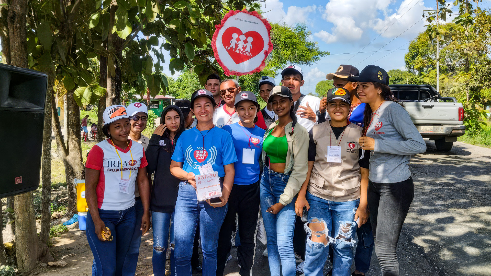
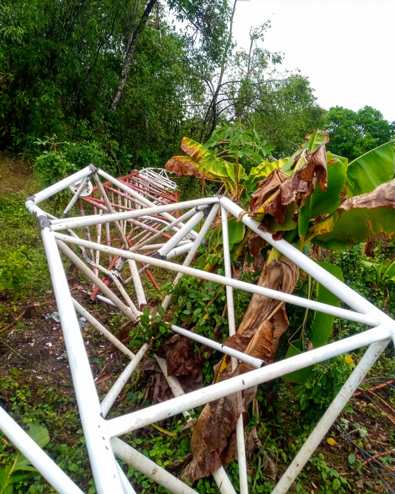
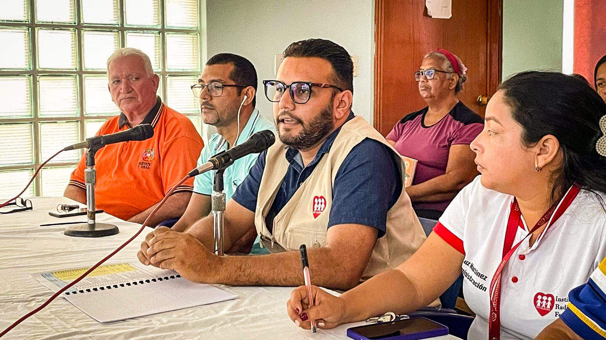
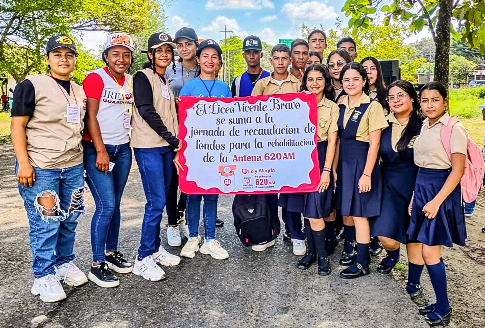
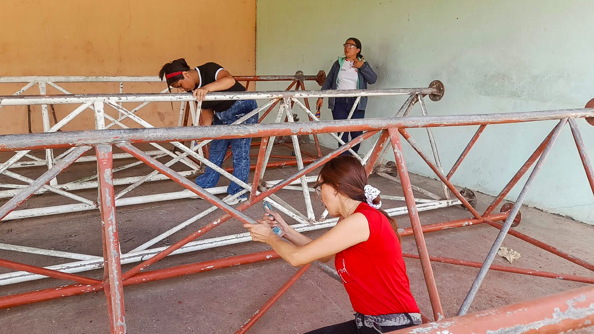
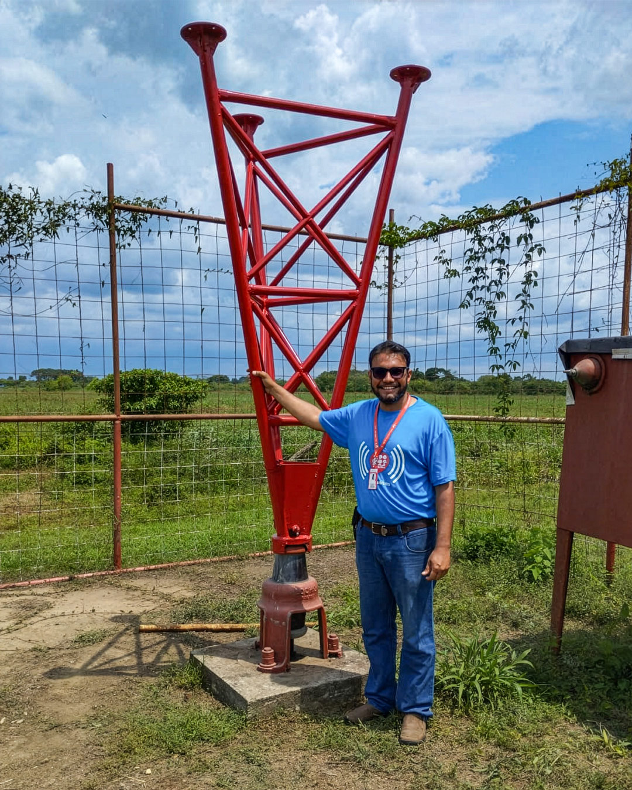
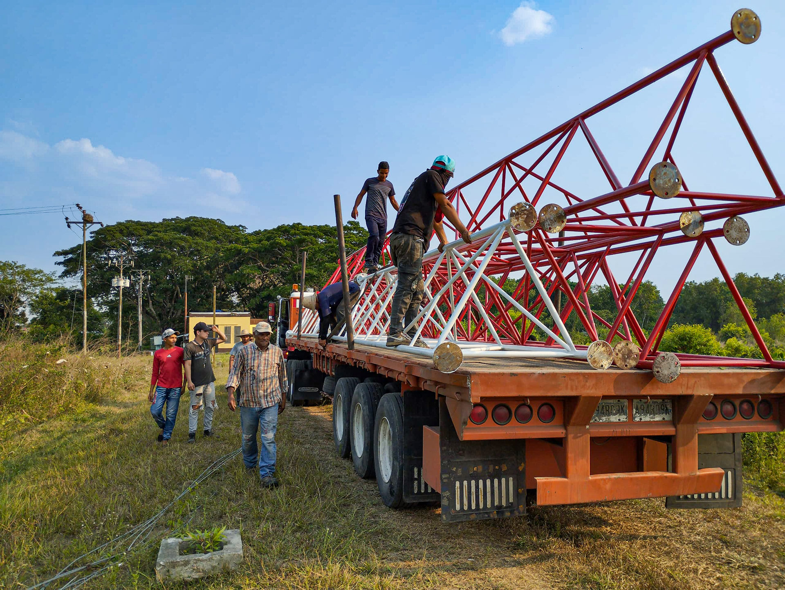
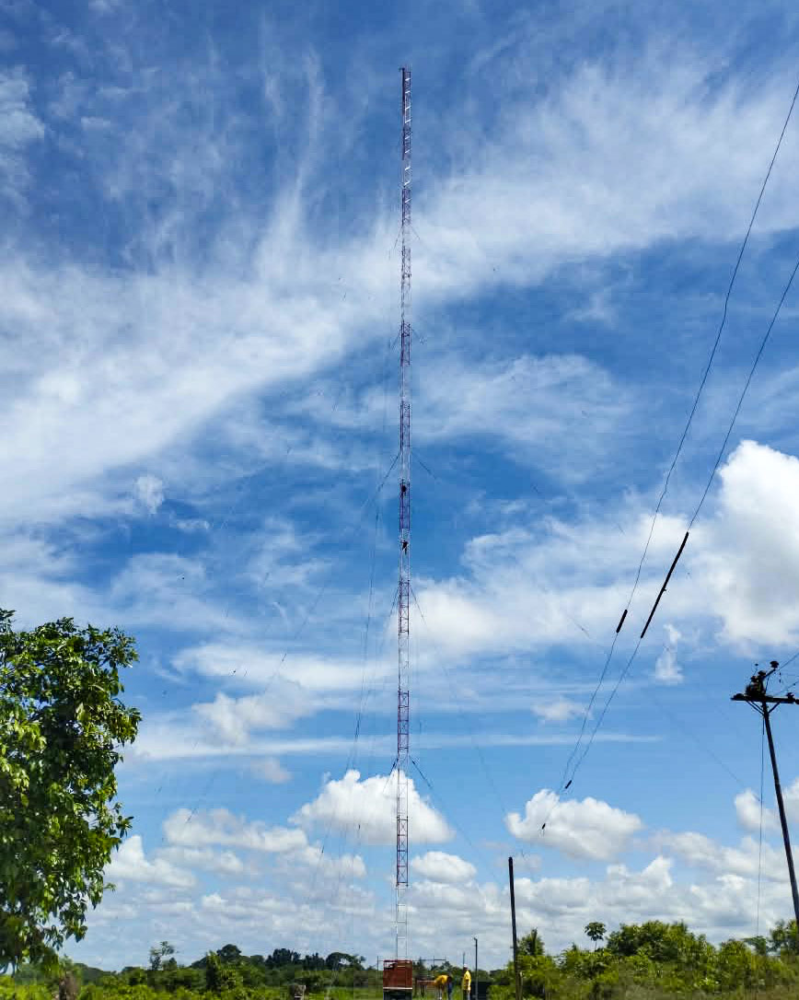
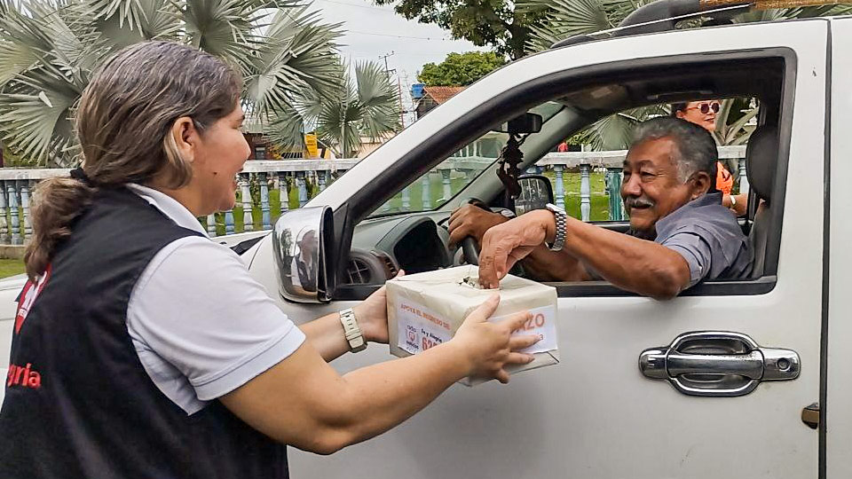

Historias – Apure
Haremos lo que sea para que nuestra radio vuelva
En abril de 2024, un recio chubasco derribó la antena transmisora de Radio Fe y Alegría 620 AM en el estado Apure. Desde entonces, trabajadores de la emisora y parte de la audiencia han organizado campañas de recolección de fondos para lograr que la estación vuelva a operar. “¿Cuánto falta?”, insisten ciudadanos que asumen este medio como suyo.

La mañana del 18 de abril de 2024, la jornada de ordeño de los campos apureños fue distinta. Mucho más silente. Cantares del llano adentro, el primer programa que a diario transmitía Fe y Alegría 620 AM, no salió al aire. La música llanera, los comentarios del locutor Carlos Quintero, las notas del himno nacional de Venezuela hicieron falta en tantas rutinas mañaneras. En la de la mujer que madrugó para hacer el desayuno; en la esposa del lechero que esperaba noticias; en la madre del niño que quería oír la misma canción que sonaba todos los días…
Muchos concluyeron que el chaparrón que había caído durante la madrugada —el primero después de un duro verano— tenía que ver con la ausencia. “Seguro se les fue la luz”, pensaron algunos. Otros más bien revisaron sus radios a ver si era que se les había descompuesto.
Pero en realidad lo que había sucedido era que, en medio del aguacero y el vendaval de aquella madrugada, la emisora —que operaba en la zona desde 1991— había perdido su antena transmisora.

Muchos se acercaron a la sede, ubicada en el sector La Arenosa, para ver qué ocurría. Incluso lo hicieron personas procedentes de zonas remotas del Alto Apure.
Juan Carlos Rosales, el director de la estación, los recibía y les explicaba:
—Sí, se nos cayó la antena y perdimos la señal.
—¿Y cuándo van a volver? ¡Nos hacen falta!
—Confiamos en que será pronto. Les avisaremos cuando tengamos un plan para que ustedes también se sumen a la recuperación.
Juan Carlos tenía apenas cuatro meses como director de Fe y Alegría 620 AM. A cada persona que le contaba lo ocurrido, la veía irse inquieta, insatisfecha, con el sabor agridulce de quien no obtiene la solución inmediata a su problema. Y entonces el boca a boca fue esparciendo el rumor, ahora convertido en noticia.
Los radioescuchas no eran los únicos que se sentían consternados.
Cuando el director de la emisora llegó a la sede aquella primera mañana de silencio, los empleados lloraban mientras intentaban levantar esa torre de tubos rojos y blancos.
—Lo vamos a solucionar. Tengan confianza. No vamos a irnos.
Radio Fe y Alegría 620 AM siempre fue más que una radio para los habitantes de Guasdualito.
Juan Carlos se aprendió la historia de la emisora al pie de la letra, mucho antes de entrar a trabajar en ella como productor creativo en 2017. Él amaba la radio, escuchándola. Sabía que había sido fundada el 9 de noviembre de 1991 por el padre Rafael Baquedano, S.J., en colaboración con periodistas apureños; sabía que formaba parte del Instituto Radiofónico Fe y Alegría (IRFA); que todos trabajaban por la promoción de la educación popular, la cultura y la información en la región llanera y en ese pedazo de frontera de Venezuela con Colombia.
Los apureños pronto empezaron a ver que su identidad, sus tradiciones y sus voces tenían un espacio genuino en las cabinas. Un día, Juan Carlos se enteró de una anécdota que le permitió entender que la radio estaba siendo fundamental para estimular el sentido de pertenencia: cuando la emisora comenzó a transmitir, muchos vecinos sabían mejor el himno de Colombia que el de Venezuela, porque solían escuchar una emisora colombiana, cuya señal llegaba por esos predios. Pero con el tiempo, empezaron a cantar el himno nacional que escuchaban en 620 AM.
Cuando aún no existían las redes sociales, los radioescuchas se acercaban a las puertas de la estación, en el sector La Arenosa, para denunciar sus problemas diarios. Y cuando los teléfonos celulares se hicieron más masivos, en la década de los 2000, llamaban para enviar algún mensaje a un familiar o pedir una canción.

La sede de Fe y Alegría 620 AM se volvió el punto de encuentro y escucha de una comunidad entera. Se entretenían, pero también conseguían información de interés a tiempo; y encontraban programas de formación.
Llegó un punto en que los apureños se reunían en los jardínes de la emisora, amplios y verdes, para que los niños formaran parte del proyecto vacacional “Vacaciones con Fe y Alegría”. Y hacían algo más valioso: dejar que los visitaran en sus propias comunidades.
En una oportunidad, Juan Carlos asistió a una cobertura en tribunales y, cuando llegó, un radioescucha, le dijo:
—Sabía que ustedes iban a venir porque Fe y Alegría nunca abandona a sus hijos.
Esas palabras quedaron grabadas en su memoria.
Fue la misma frase que le resonó cuando vio la magnitud del problema con la antena caída.
En esos primeros días, trató de resolver.
Para entender el daño, buscó un técnico de antenas AM (escasos debido a la desaparición de emisoras de este tipo en el país), quien le explicó lo que había ocurrido:
—¡Esto no estaba atornillado, jefe! ¿Por qué ustedes tenían esa antena así?
Juan Carlos le respondió al técnico que desde 1991 la antena no tenía tornillo, porque cuando la atornillaban perdían la señal. Ocurría un “efecto de aterramiento”, que significa que la electricidad se iba a tierra y nadie podía escucharlos.
—Reparar esto sale, más o menos, en 12 mil dólares.
¿Qué hacer? ¿De dónde sacar ese dinero? ¿Cuál era la mejor vía para obtener una solución rápida? Juan Carlos no sabía qué hacer.
—Nosotros queremos ayudarlos. Vamos a hacer lo que se tenga que hacer para que vuelva la señal, para que nuestra radio vuelva —le dijeron unos oyentes que se le acercaron a preguntarle qué había pasado.

Juan Carlos Rosales y los otros 30 trabajadores de Radio Fe y Alegría 620 AM se sorprendían con la disposición y el interés de las personas del Alto Apure, pero entendía el porqué: la radio es el único medio cercano, disponible las 24 horas, y gratuito.
La señal de la 620 AM llegaba a los municipios Achaguas, Unión, Páez, Rómulo Gallegos. En la sabana más remota, ahí se escuchaba. Además, se extendía a otras regiones del país y fuera de él: los pueblos del sur y Mucuchíes en Mérida, Barinas, Táchira, Lara y hasta el departamento de Arauca en Colombia.
—Es una emisora AM de 50 mil vatios de potencia tipo A… Una vez nos llamaron de Valle de Guanape, en Anzoátegui, porque hasta allá, por las noches, llegaba la señal —recuerda Juan Carlos.
Juan Carlos Rosales pidió ayuda en Fe y Alegría, para evaluar si podían destinar recursos para la recuperación de la antena, pero la organización no tenía fondos para ello.
Un año después de que comenzara el silencio, el 22 de abril de 2025, Juan Carlos Rosales y otros miembros de la emisora reunieron a los vecinos en la sede de la radio y les propusieron una campaña de recolección de fondos que denominaron: “Juntos restauramos la voz de la comunidad”.
Fue una buena idea. Llegó algo de dinero, y otro tipo de aportes: una gallina para la venta, un pato. La rifa anual de Fe y Alegría de 2025, en Apure, estuvo destinada a la recolección de fondos para la sostenibilidad de centros educativos y la emisora. Salían a la calle para vender los tickets con un afiche y hasta los motorizados se frenaban y explicaban por qué donaban.

—Los voy a ayudar porque esto es patrimonio de Guasdualito, de Apure, hay que sacar adelante a Fe y Alegría —dijo un transeúnte.
La campaña se extendió durante meses. En julio, estaban cerca de cerrar un acuerdo con los ganaderos de Apure para recibir un donativo económico, pero llegó otra inundación y las prioridades cambiaron. Ya no tenían dinero para la radio, sino para salvar los campos, y las reses afectadas por la crecida y el estancamiento del agua.
Durante aquella emergencia, la gente los buscó. Aunque en Facebook y TikTok compartían un noticiero audiovisual, y la emisora FM también se escuchaba en zonas cercanas, el teléfono de la estación no dejó de sonar por horas.
—Queremos saber qué ha pasado con Guasdualito. ¿Por qué la emisora no está al aire? —les preguntaban.
—Todavía no hemos levantado la antena de la AM —respondían.
Juan Carlos sentía que debía apurarse. A pesar de los aportes, no lograban reunir el monto para la reparación de la antena.
En noviembre de 2025, hicieron un “Potazo” en alianza con colegios de la zona, que movilizó a las comunidades lejanas, como Guasdualito, El Nula, Totumito y otras parroquias de Apure en las que hicieron recorridos para dar a conocer la iniciativa.

Con los pocos ahorros de la emisora, más lo recabado en las jornadas de recolección, pudieron avanzar.
Primero la herrería.
Durante tres semanas, desarmaron, movieron, lijaron y pulieron cada centímetro de la torre caída para pintarla. El esfuerzo fue gigante: se trata de una estructura de 160 metros.
—¡Aquí tienen esta agüita! ¿En qué más los podemos ayudar? ¡Nosotros queremos ayudar a pintar! —llegó a decirles un vecino.
Les buscó una lija y una brocha, y ahí se quedó, hasta que cayó la noche.

Cuando tocó mover la antena a la planta transmisora, el traslado también fue una colaboración. Lo más difícil era volver a montarla en su lugar: el techo de la emisora, sobre una base de cristal.
Llegó una compañía especializada en instalación de antenas de internet.
—Solo les vamos a cobrar el gasto material, y para pagarle a los muchachos, pero vamos a apoyar a Fe y Alegría porque esto es de nuestra comunidad y el servicio que ustedes prestan es importante —les dijo el gerente.
La antena de Fe y Alegría 620 AM perdió 40 metros de los 160 que medía antes del vendaval. Restauraron 80 metros de la original y al final, por la inflación, ponerla de pie costó 17 mil dólares. Buena parte de ese dinero todavía lo deben. En términos radiofónicos, perdieron un cuarto de onda y menos gente podrá escucharla cuando esté completamente operativa.
Ahora están en una etapa de ajuste del control de potencia del transmisor porque ha generado fallas. En parte, se debe a que el equipo ya lleva más de dos años apagado.
Tienen que empezar con la potencia mínima de la emisora debido a que la onda reflejada, que es la energía de radiofrecuencia que la antena no transmite ni absorbe, puede devolverse y quemar el transmisor.
A Juan Carlos le tocó aprender de estos asuntos técnicos. Él y su equipo se formaron académicamente como periodistas y docentes, pero en medio de todo esto aprendieron a soldar y empatar cobre. Han sido electricistas porque también intervinieron un transformador. La gente ha visto ese esfuerzo. Al ver la torre en pie y con las luces encendidas, cada vez más se preguntan cuándo regresan.
—Eso viene pronto; pronto volvemos así sea con música.

Las esperanzas están puestas en el próximo 9 de noviembre de 2026. Ese día Radio Fe y Alegría 620 AM cumple 35 años de haber sido fundada en Guasdualito. Debido a los apagones constantes, que duran hasta ocho horas o más, van contrarreloj, pero con el deseo de dar ese regalo a la comunidad.
Juan Carlos sabe que ese día habrá una fiesta en cada casa.
La gente de los pueblos más remotos se lo ha hecho saber.
—¡Estoy aquí con el radio prendido! Ya lo limpié. Aquí que falte todo en el mercado, pero menos las pilas para la radio.
